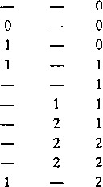
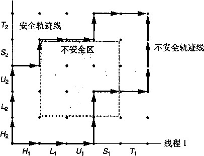

图 12-8 基于 I/O 多路复用的并发 echo 服务器。每次服务器迭代都回送来自每个准备好的描述符的文本行
while (1) {
3'i /* Wait for listening/connected descriptor(s) to become ready ’■/
pool.ready_set = pool.read_set;
pool.nready = Select(pool.maxfd+1, fepool.ready.set, NULL, NULL, NULL);
'34
/木 If liste-niiag descriptor ready, add new client to pool */
if (FD_ISSET(listenfd, &pool .ready_set)) {
connfd = Accept(listenfd, (SA *)&clientaddr, feclientlen);
add_client (connfd, fepool) ;
>
40
/■> Echo a toxt line from each ready connected descriptor */
check_clients(&pool);
>
code/conc/echoservers. c
图 12-8 ( 续）
init__pool函数（见图12-9)初始化客户端池。clientfd数组表示已连接描述符的集合, 其中整数-1表示一个可用的槽位。初始时，已连接描述符集合是空的（第5〜7行)，而且监 听描述符是select读集合中唯一的描述符（第10〜12行)。
; code/conc/echoservers. c
! void init_pool(int listenfd, pool *p)
2 {
h Initially, there are no connected descriptors */
int i;
p->maxi ~ -1;
for (i=0; i< FD.SETSIZE; i++)
p- 〉 clientfd[i] = -1;
3
9 /* Initially , listenfd is only member of select: read set. 伞 /
p->maxfd = listenfd;
FD_ZER0(&p->read_set);
FD_SET(listenfd, &p->read_set);
>
code/conc/echoservers. c
图 12-9 initj)ool ：初始化活动客户端池
add 一 clieht函数（见图12-10)添加一个新的客户端到活动客户端池中。在clientfd 数组中找到一个空槽位后，服务器将这个已连接描述符添加到数组中 ， 并初始化相应的RIO读 缓冲区，这样一来我们就能够对这个描述符调用rio—readlineb (第8〜9行)。 然后 ，我们 将这个已连接描述符添加到select读集合（第12行)，并更新该池的一些全局属性。maxfd 变量（第15〜16行）记录了 select的最大文件描述符。maxi变量（第17〜18行）记录的 是到clientfd数组的最大索弓丨，这样check_clients函数就无需搜索整个数组了。
C h eC k_ C lients函数（见图12-11)回送^自每个准备好的已连接描述符的一个文本行。 如果成功地从描述符读取了一个文本行，那么我们就将该文本行回送到客户端（第15〜18行)。 注意，在第15行我们维护着一个从所有客户端接收到的全部字节的累计值。如果因为客户端关 闭这个连接中它的那一端，检测到EOF,那么我们将关闭这边的连接端（第23行)，并从池中 清除掉这个描述符（第24〜25行)。
code/conc/echoservers. c
void add_client(int connfd, pool *p)
{
int i;
p->nready__;
for (i = 0; i < FD_SETSIZE; i++) /* Find an available slot
6
7
9
10
11
12
13
if (p->clientfd[i] < 0) {
/* Add connected descriptor to the pool */ p->clientfd[i] = connfd;
Rio_readinitb(&p->clientrio[i], connfd);
/* Add the descriptor to descriptor set */
FD_SET(connfd, &p->read_set);
and pool highwater mark */
h' Update max descriptor if (connfd > p->maxfd) p->maxfd = connfd; if (i > p->maxi) p_>maxi = i; break;
if (i -= FD 一 SETSIZE) /* Cou'ldn 1 1 find an empty slot +./ app_error( 11 add_client error: Too many clients") ;
code/conc/echoservers. c
图12-10 add client ：向池中添加一个新的客户端连接
code/conc/echoservers. c
void check_clients(pool *p)
If the descriptor is ready, echo a text line from it */
((connfd > 0) && (FD.ISSET(connfd, &p->ready_set))) { p->nready--;
if ((n = Rio_readlineb(&rio, buf, MAXLINE)) != 0) { byte一cut += n;
printf("Server received %d (%d total) bytes on fd %d\n M , n, byte_cnt, connfd);
Rio_writen(connfd, buf, n);
}
/* EOF detected, remove descriptor from pool */ else {
int i, connfd, n; char buf[MAXLINE]; rio_t rio;
for (i = 0; (i <= p->maxi) && (p->nready > 0); i++) { connfd = p->clientfd[i]; rio = p->clientrio[i];
Close(connfd); FD_CLR(connfd, p->clientfd[i]
图12-11 check_clients :为准备好的客户端连接服务
■ code/conc/echoservers. c
6
7
9
10
il
A
if
14
15
16
17
18
19
21 22
23
24
25
26
27
29
&p->read_set); =-1;
根据图12-7中的有限状态模型，select函数检测到输入事件，而add一client函数创建 一个新的逻辑流（状态机)。check_clients函数通过回送输入行来执行^态转移，而且当客 户端完成文本行发送时，它还要删‘这个状态机。
I/O多路复用技术的优劣
图12-8中的服务器提供了一个很好的基于I/O多路复用的事件驱动编程的优缺点示例。事 件驱动设计的一个优点是，它比基于进程的设计给了程序员更多的对程序行为的控制。例如，我 们可以设想编写一个事件驱动的并发服务器，为某些客户端提供它们需要的服务，而这对于基于 进程的并发服务器来说，是很困难的。
另一个优点是，一个基于i/o多路复用的事件驱动服务器是运行在单一进程上下文中的，因 此每个逻辑流都能访问该进程的全部地址空间。这使得在流之间共享数据变得很容易。一个与作 为单个进程运行相关的优点是，你可以利用熟悉的调试工具，例如GDB,来调试你的并发服务 器，就像对顺序程序那样。最后，事件驱动设计常常比基于进程的设计要高效得多，因为它们不 需要进程上下文切换来调度新的流。
事件驱动设计的一个明显的缺点就是编码复杂。我们的事件驱动的并发echo服务器需要的 代码比基于进程的服务器多三倍。不幸的是，随着并发粒度的减小，复杂性还会上升。这里的粒 度是指每个逻辑流每个时间片执行的指令数量。例如，在我们的示例并发服务器中，并发粒度就 是读一个完整的文本行所需要的指令数量。只要某个逻辑流正忙于读一个文本行，其他逻辑流就 不可能有进展。对我们的例子而言这就很好了，但是它使得我们的事件驱动服务器在“故意只发 送部分文本行然后就停止”的恶意客户端的攻击面前显得很脆弱。修改事件驱动服务器来处理部 分文本行不是一个简单的任务，但是基于进程的设计却能处理得很好,而且是自动处理的。基于 事件的设计的另一个重大缺点是它们不能充分利用多核处理器。
_练习题12.4在如图 12 - 8 所示的服务器中，我们在每次调用select之前都立即小心地重新初始化 pool.ready_set变量。这是为什么？
12.3 基于线程的并发编程
到目前为止，我们已经看到了两种创建并发逻辑流的方法。在第一种方法中，我们为每个流 使用了单独的进程。内核会自动调度每个进程。每个进程有它自己的私有地址空间，这使得流 共享数据很困难。在第二种方法中，我们创建自己的逻辑流，并利用i/o多路复用来显式地调度 流。因为只有一个进程，所有的流共享整个地址空间。这一节介绍第三种方法一基于线程，它 是这两种方法的混合。
线程（thread)就是运行在进程上下文中的逻辑流。迄今在本书里，程序都是由每个进程中 一个线程组成的。但是现代系统也允许我们编写一个进程里同时运行多个线程的程序。线程由内 核自动调度。每个线程都有它自己的线程上下文（thread context),包括一个唯一的整数线程ID (Thread ID, TID)、栈、栈指针、程序计数器、通用目的寄存器和条件码。所有的运行在一个进 程里的线程共享该进程的整个虚拟地址空间。
基于线程的逻辑流结合了基于进程和基于I/O多路复用的流的特性。同进程一样，线程由内 核自动调度，并且内核通过一个整数ID来识别线程。同基于I/O多路复用的流一样，多个线程 运行在单一进程的上下文中，因此共享这个进程虚拟地址空间的整个内容，包括它的代码、数 据、堆、共享库和打开的文件。
12.3.1线程执行模型
多线程的执行模型在某些方面和多进程的执行模型是相似的。思考一下图12-12中的示例。 每个进程开始生命周期时都是单一线程，这个线程称为主线程（main thread)。在某一时刻，主
线程创建 一个对等线程 （peer thread)，从这个时间点开始，两个线程就并发地运行。最后，因 为主线程执行一个慢速系统调用，例如read或sleep,或者因为它被系统的间隔计时器中断， 控制就会通过上下文切换传递到对等线程。对等线程会执行一段时间，然后控制传递回主线程， 依次类推。
|
线程1 (主线程 4 ,) |
线程2 (对等线程） |
|
令 |
|
|
i |
|
|
|
^■…一 |
|
\ |
|
|
1 |
}线程上下文切换
}线程上下文切换 }线程上下文切换
图 12-12 并发线程执行
在一些重要的方面，线程执行是不同于时间 进程的。因为一个线程的上下文要比一个进 程的上下文小得多，线程的上下文切换要比 进程的上下文切换快得多。另一个不同就是 线程不像进程那样，不是按照严格的父子层 次来组织的。和一个进程相关的线程组成一 个对等（线程）池（pool),独立于其他线 程创建的线程。主线程和其他线程的区别仅 在于它总是进程中第一个运行的线程。对等 (线程）池概念的主要影响是，一个线程可 以杀死它的任何对等线程，或者等待它的任 意对等线程终止。另外，每个对等线程都能 读写相同的共享数据。
Posix 线程
Posix线程（Pthreads)是在C程序中处理线程的一个标准接口。它最早出现在1995年，而 且在大多数Unix系统上都可用。Pthreads定义了大约60个函数，允许程序创建、杀死和回收线 程，与对等线程安全地共享数据，还可以通知对等线程系统状态的变化。
图12-13展示了一个简单的Pthreads程序。主线程创建一个对等线程，然后等待它的终止。 对等线程输出“Hello, world! \n”并且终止。当主线程检测到对等线程终止后，它就通过调 用exit终止该进程。
code/conc/hello. c
#include "csapp.h"
void *thread(void *vargp);
int mainO
pthread_t tid;
Pthread_create(&tid, NULL, thread, NULL); Pthread_j oin(tid, NULL); exit(0);
void *thread(void *vaxgp) /* Thread routine 氺/
printf("Hello, world!\n"); return NULL;
code/conc/hello. c
图 12-13 hello.c ： Pthreads“Hello, world!” 程序
这是我们看到的第一个线程化的程序，所以让我们仔细地解析它。线程的代码和本地数据被 封装在 一个线程例程 （thread routine)中。正如第二行里的原型所示，每个线程例程都以一个通
用指针作为输入，并返回一个通用指针。如果想传递多个参数给线程例程，那么你应该将参数放 到一个结构中，并传递一个指向该结构的指针。相似地,如果你想要线程例程返回多个参数，你 可以返回一个指向一个结构的指针。
第 4 行标出了主线程代码的开始。主线程声明了一个本地变量tid,它可以用来存放对等线 程的线程ID (第 6 行)。主线程通过调用pthread—create函数创建一个新的对等线程（第7 行)。当对pthread_create的调用返回时，主线^和新创建的对等线程同时运行，并且tid 包含新线程的ID。通过调用pthread_join,主线程等待对等线程终止（第 8 行)。最后，主线 程调用exit (第9行)，终止当时运行^这个进程中的所有线程（在这个示例中就只有主线程)。
第12〜16行定义了对等线程的线程例程。它只打印一个字符串，然后就通过执行第15行 中的return语句来终止对等线程。
12.3.3创建线程
线程通过调用pthread一create函数来创建其他线程。
#include <pthread.h> typedef void *(func)(void *);
int pthread_create(pthread_t *tid, pthread_attr_t *attr, func *f, void *axg);
返回：若成功则返回 0, 若出错则为非零。
pthread一create函数创建一个新的线程，并带着一个输入变量arg，在新线程的上下文 中运行线 程例程 f。能用attr参数来改变新创建线程的默认属性。改变这些属性已超出我们 学习的范围，并且在我们的示例中，我们总是用一个为NULL的attr参数来调用 P thread_ create 函数。
当pthread_ C reate返回时，参数tid包含新创建线程的ID。新线程可以通过调用 pthread_self函数来获得它自己的线程ID。
#include <pthread.h> |
|
pthread_t pthread 一 self(void); |
返回 : 返回调用者的线程 ID 。 |
12.3.4终止线程
一个线程是以下列方式之一来终止的：
•当顶层的线程例程返回时，线程会 隐式地 终止。
•通过调用pthread一exit函数，线程会 显式地 终止。如果主线程调用pthread一exit, 它会等待所有其他对等线程终止，然后再终止主线程和整个进程，返回值为thread—
|
return 0 |
|
|
#include <pthread.h> |
|
|
void pthread_exit(void *thread_return); |
|
|
返回：若成功则返回 0, 若出错则为非零。 |
|
•某个对等线程调用Unix的exit函数，该函数终止进程以及所有与该进程相关的线程。
•另一个对等线程通过以当前线程ID作为参数调用pthread一cancle函数来终止当前线程。
#include <pthread.li> |
|
int pthread_cancel(pthread_t tid); |
|
返同： |
:若成功则返回 0 , 若出错则为非零。 |
12.3.5 回收已终止线程的资源 |
|
线程通过调用pthread一join函数等待其他线程终止。 |
|
#include <pthread.h> |
|
int pthread^join(pthread.t tid, void **thread_return); |
|
返回： |
若成功则返回 0 , 若出错则为非零。 |
pthread—join函数会阻塞，直到线程tid终止，将线程例程返回的（void*)指针赋值 为thread一return指向的位置，然后 回收已 终止线程占用的所有存储器资源。
注意，和Unix的wait函数不同，pthread—join函数只能等待一个指定的线程终止。 没有办法让Pthread_wait等待任意一个线程终止。这使得代码更加复杂，因为它迫使我们去 使用其他一些不那么i■观的机制来检测进程的终止。实际上，Stevens在[109]中就很有说服力地 论证了这是规范中的一个错误。
分离线程
在任何 一个时 间点上，线程是可 结合的 （joinable)或者是 分离的 （detached)。 一个 可结合 的线程能够被其他线程收回其资源和杀死。在被其他线程回收之前，它的存储器资源（例如栈） 是没有被释放的。相反，一个分离的线程是不能被其他线程回收或杀死的。它的存储器资源在它 终止时由系统自动释放。
默认情况下，线程被创建成可结合的。为了避免存储器泄漏，每个可结合线程都应该要么被 其他线程显式地收回，要么通过调用pthread一detach函数被分离。
pthread一detach函数分离可结合线程tid。线程能够通过以pthread一self ()为参数 的pthread一detach调用来分离它们自己。
#include <pthread.h> |
|
int pthread_detach(pthread_t tid); |
|
返回：若成功则返回 0, 若出错则为非零。 |
尽管我们的一些例子会使用可结合线程，但是在现实程序中，有很好的理由要使用分离的线 程。例如， 一个 高性能Web服务器可能在每次收到Web浏览器的连接请求时都创 建一个 新的对 等线程。因为每个连接都是由一个单独的线程独立处理的，所以对于服务器而言，就很没有必要 (实际上也不愿意）显式地等待每个对等线程终止。在这种情况下，每个对等线程都应该在它开 始处理请求之前分离它自身，这样就能在它终止后回收它的存储器资源了。
初始化线程
|
pthread一once 函数允许你初始化与线程例程相关的状态。 |
|
|
#include <pthread.h> |
|
|
pthread_once_t once 一 control = PTHREAD_0NCE_INIT; |
|
|
int pthread.once(pthread_once_t *once_control, |
|
|
• void (*init_routine)(void)); |
|
|
总是返回 0 。 |
|
once_control变量是一个全局或者静态变量，总是被初始化为PTHREAD_ONCE_INIT。 当你第一次用参数once_control调用pthread_once时，它调用init_routine,这是 一个没有输入参数，也不返回什么的函数。接下来的以once_control为参数的pthread_ once调用不做任何事情。无论何时，当你需要动态初始化>个线程共享的全局变量时， pthread_once函数是很有用的。我们将在12.5.5节里看到一个示例。
一个基于线程的并发服务器
图12-14展示了基于线程的并发echo服务器的代码。整体结构类似于基于进程的设计。主 线程不断地等待连接请求，然后创建一个对等线程处理该请求。虽然代码看似简单，但是有几 个普遍而且有些微妙的问题需要我们更仔细地看一看。第一个问题是当我们调用pthread_ create时，如何将已连接描述符传递给对等线程。最明显的方法就是传递一个指向这个描述# 的指针 ， 就像下面这样
connfd = Accept(listenfd, (SA *) feclientaddr, feclientlen);
Pthread 一 create(&tid, NULL, thread, feconnfd);
然后，我们让对等线程间接引用这个指针 ， 并将它赋值给一个局部变量 ， 如下所示 ：
void *thread(void *vargp) {
int connfd = *((int *)vargp);
>
然而，这样可能会出错，因为它在对等线程的赋值语句和主线程的accept语句间引入了 竞争（race)。如果赋值语句在下一个accept之前完成，那么对等线程中的局部变量connfd 就得到正确的描述符值。然而，如果赋值语句是在accept之后才完成的 ， 那么对等线程中的 局部变量cormfd就得到下一次连接的描述符值。那么不幸的结果就是，现在两个线程在同一 个描述符上执行输入和输出。为了避免这种潜在的致命竞争，我们必须将每个accept返回的 已连接描述符分配到它自己的动态分配的存储器块，如第21 〜 22行所示。我们会在12.7.4节中 回过来讨论竞争的问题。
code/conc/echoservert. c
#include "csapp.h"
2
void echo(int connfd);
void 氺 thread(void *vargp) ;
5
int main(int argc, char **argv) 0
{
int listenfd, *connfdp, port;
socklen_t clientlen=sizeof(struct sockaddr_in) ;
struct sockaddr_in clientaddr;
pthreadst tid;
12
if (argc != 2) {
fprintf(stderr, "usage: %s <port>\n", argv[0]);
'15 exit(0);
>
port = atoi(argv[1] );
18
图12-14基于线程的并发echo服务器
listenfd = 0pen_listenfd(port); while (1) {
19
21 22
23
24
25
26
27
28
29
30
31
32
connfdp = Malloc(sizeof(int));
♦connfdp = Accept(listenfd, (SA *) feclientaddr, &clientlen); Pthread^create(&tid, NULL, thread, connfdp);
>
/* Thread, routine 本/ void *thread(void *vargp)
int connfd = *((int *)vargp); Pthread_detach(pthread^self0); Free(vargp); echo(connfd);
Close(connfd); return NULL;
. code/conc/echoservert. c
图 12-14 (续）
另一个问题是在线程例程中避免存储器泄漏。既然我们不显式地收回线程，我们就必须分离 每个线程，使得在它终止时它的存储器资源能够被收回（第31行)。更进一步，我们必须小心释 放主线程分配的存储器块（第32行)。
_练习题12.5在图12-5中基于进裎的服务器中，我们在两个位置小心地关闭了巳连接描述符：父进 程和子进程。然而，在图12-14中基于线程的服务器中，我们只在一个位’置关闭了巳连接描述符：对 等线程。这是为什么？
12.4 多线程程序中的共享变量
从一个程序员的角度来看，线程很有吸引力的一个方面就是多个线程很容易共享相同的程序 变量。然而，这种共享也是很棘手的。为了编写正确的线程化程序，我们必须对所谓的共享以及 它是如何工作的有很清楚的了解。
为了理解C程序中的一个变量是否是共享的，有一些基本的问题要解答：1)线程的基础存 储器模型是什么？ 2)根据这个模型 ， 变量实例是如何映射到存储器的？ 3)最后，有多少线程 引用这些实例？ 一个变量是共享的，当且仅当多个线程引用这个变量的某个实例。
为了让我们对共享的讨论具体化，我们将使用图12-15中的程序作为一个运行示例。尽管有 些人为的痕迹 ， 但是它仍然值得研究，因为它说明了关于共享的许多细微之处。示例程序由一个 创建了两个对等线程的主线程组成。主线程传递一个唯一的ID给每个对等线程，每个对等线程 利用这个ID输出一条个性化的信息，以及调用该线程例程的总次数。
code/conc/sharing. c
#include "csapp.h"
#define N 2
void *thread(void *vargp);
4
char **ptr ; /* Global variable */
6
int mainO
图 12-15 说明共享不同方面的示例程序
int i;
pthread^t tid; char *msgs[N] = {
"Hello from foo", "Hello from bar"
ptr = msgs;
for (i = 0; i < N; i++)
Pthread_create(fetid, NULL, thread, (void *)i); Pthread 一 exit(NULL);
void *thread(void 氺vargp)
25
26
int myid = (int)vargp; static int cnt = 0;
printf("[%d]: %s (cnt=%d)\n" , myid, ptr[myid] , ++cnt); return NULL;
28
}
code/conc/sharing. c
图 12-15 (续）
12.4.1线程存储器模型
一组并发线程运行在一个进程的上下文中。每个线程都有它自己独立的 线程上下文， 包括线 程ID、栈、栈指针、程序计数器、条件码和通用目的寄存器值。每个线程和其他线程一起共享 进程上下文的剩余部分。这包括整个用户虚拟地址空间，它是由只读文本（代码)、读/写数据、 堆以及所有的共享库代码和数据区域组成的。线程也共享同样的打开文件的集合。
从实际操作的角度来说，让一个线程去读或写另一个线程的寄存器值是不可能的。另一方 面，任何线程都可以访问共享虚拟存储器的任意位置。如果某个线程修改了一个存储器位置，那 么其他每个线程最终都能在它读这个位置时发现这个变化。因此，寄存器是从不共享的，而虚拟 存储器总是共享的。
各自独立的线程栈的存储器模型不是那么整齐清楚的。这些栈被保存在虚拟地址空间的栈区 域中，并且通常是被相应的线程独立地访问的。我们说通常而不是总是，是因为不同的线程栈是 不对其他线程设防的。所以，如果一个线程以某种方式得到一个指向其他线程栈的指针，那么它 就可以读写这个栈的任何部分。我们的示例程序在第26行展示了这一点，其中对等线程直接通 过全局变量Ptr间接引用主线程的栈的内容。
12.4.2将变量映射到存储器
线程化的C程序中变量根据它们的存储类型被映射到虚拟存储器：
• 全局变量。 全局变量是定义在函数之外的变量。在运行时，虚拟存储器的读/写区域只包 含每个全局变量的一个实例，任何线程都可以引用。例如，第5行声明的全局变量ptr在 虚拟存储器的读/写区域中有一个运行时实例。当一个变量只有一个实例时，我们只用变 量名（在这里就是Ptr)来表示这个实例。
•本地自动 变量。本地自动变量就是定义在函数内部但是没有static属性的变量。在运行 时，每个线程的栈都包含它自己的所有本地自动变量的实例。即使当多个线程执行同一个 线程例程时也是如此。例如，有一个本地变量tid的实例 ， 它保存在主线程的栈中。我们 用tid.Hi来表示这个实例。再来看一个例子，本地变量myid有两个实例，一个在对等
线程0的栈内，另一个在对等线程1的栈内。我们将这两个实例分别表示为myid.pO和 myid.pl。
• 本地静态变量。 本地静态变量是定义在函数内部并有static属性的变量。和全局变量一 样，虚拟存储器的读/写区域只包含在程序中声明的每个本地静态变量的一个实例。例如， 即使示例程序中的每个对等线程都在第25行声明了 cnt，在运行时，虚拟存储器的读/写 区域中也只有一个cnt的实例。每个对等线程都读和写这个实例。
共享变量
我们说一个变量v是共享的，当且仅当它的一个实例被一个以上的线程引用。例如，示例程 序中的变量cnt就是共享的，因为它只有一个运行时实例，并且这个实例被两个对等线程引用。 在另一方面，inyid不是共享的，因为它的两个实例中每一个都只被一个线程引用。然而，认识 到像msgs这样的本地自动变量也能被共享是很重要的。
®练习题12.6 A.利用12.4节中的分析，为图12-15中的示例程序在下表的每个条目中填写“是”或 者“否”。在第一列中，符号v.r表示变量v的一个实例，它驻留在线程/的本地栈中，其中^要么是m (主线程)，要么是P 0 (对等线程 0 )或者pi (对等线程 1 )。
变量实例 |
主线程引用的？ |
对等线程 0 引用的？ |
对等线程 1 引用的？ |
Ptr |
|||
cnt |
|||
i .m |
|||
msgs.m |
|||
myid.po |
|||
myid.pl |
B•根据A部分的分析，变量ptr、cnt、i、msgs和myid哪些是共享的？
12.5 用信号量同步线程
共享变量是十分方便的，但是它们也引入了同步错误（synchronization error)的可能性。考 虑图12-16中的程序badcnt.c，它创建了两个线程，每个线程都对共享计数变量cnt加1。因 为每个线程都对计数器增加了 niters次，我们预计它的最终值是2Xnit erS 。这看上去简单而直 接。然而,当在Linux系统上运行badcnt.c时，我们不仅得到错误的答案，而且每次得到的 答案都还不相词！
code/conc/badcnt. c
#include "csapp.h"
2
void *thread(void *vargp); /* Thread routine prototype */
4
/* Global shared variable */
volatile int cnt = 0; /* Counter */
7
int main(int argc, char **argv)
{
int niters;
pthread_t tidl, tid2;
12
/* Check input argument */
if (argc != 2) {
printf("usage: %s <niters>\n"，argv[0]); exit(0);
15
16
17
18
19
21 22
25
26
27
29
}
niters = atoi(argv [1]);
/* Create threads and wait for them to finish */ Pthread_create(&tidl, NULL, thread, feniters); Pthread.create(&tid2, NULL, thread, feniters); Pthread_join(tidl， NULL);
Pthread一join(tid2, NULL);
/* Check result */ if (cnt != (2 * niters))
printf("BOOM! cnt=%d\n", cnt);
else
printf("OK cnt=%d\n", cnt); exit(0);
33
34
35
36
37
38
39
40
41
42
43
/* Thread routine */ void *thread(void *vargp)
int i, niters = *((int *)vargp);
for (i = 0; i < niters; i++) cnt++;
return NULL;
}
code/conc/badcnt. c
图 12-16 (续）
linux> ,/badcnt 1000000 BOOM! cnt=1445085
linux> ./badcut 1000000 BOOM! cnt=1915220
linux> ./badcnt 1000000 BOOM! cnt=1404746
那么哪里出错了呢？为了清晰地理解这个问题，我们需要研究计数器循环（第 39 〜 40 行 ) 的汇编代码，如图12-17所示。我们发现，将线程f的循环代码分解成五个部分是很有帮助的： • 汉：在循环头部的指令块。 • A ： 加载共cnt到寄存器%eax i 的指令 ， 这里%eax i 表示纖/中的寄存器%eax的值。 更新（增加）％ eaxi 的指令。 • 岑：将％ eaxi 的更新值存回到共享变量 cut 的指令。
T, ：循环尾部的指令块。
注意头和尾只操作本地栈变量，而 A 、 ^ 和 ^,• 操作共享计数器变量的内容。 当badcnt • c中的两个对等线程在一个单处理器上并发运行时 ， 机器指令以某种顺序一个 接一个地完成。因此，每个并发执行定义了两个线程中的指令的某种全序（或者交叉)。不幸的 是，这些顺序中的一些将会产生正确结果，但是其他的则不会。
线程 f 的汇编 C 代码
线程 / 的 C 代码
for (i=0; i < niters; i + + ) cnt+4-;
H 丨•.头
Lj : Load cnt Ui : Update cnt Sj : Store cnt
-7 ； : Tail
movl (°/,rdi) ,°/ 0 ecx movl $0,%edx cmpl °/,ecx, %edx jge .L13
.Lll:
movl cnt (°/,rip) , °/«eax incl %eax
movl °/ 0 eax, cnt (%rip)
incl */:edx cmpl %ecx,%edx jl .Lll
,L13:
图 12-17 badcmt.c 中计数器循环（第 39 〜 40 行）的汇编代码
这里有个关键点： 一般而言，你没有办法预测操作系统是否将为你的线程选择一个正确的顺 序。 例如，图 12-18a 展示了一个正确的指令顺序的分步 操作。 在每个线程更新了共 享变量 cnt 之后，它在存储器中的值就是 2, 这正是期望的值。另一方面，图 12-18b 的顺序产生一个不正 确的cut的值。会发生这样的问题是因为，线程2在第5步加载cnt，是在第2步线程1加载 cnt之后，而在第6步线程1存储它的更新值之前。因此，每个线程最终都会存储一个值为1 的更新后的计数器值。我们能够借助于一种叫做 进度图 （progress graph) 的方法来阐明这些正确 的和不正确的指令顺序的概念，这个图我们将在下一节中介绍。
步骤线程指令 ％ eaxi 7 8 eax 2 cnt
步骤线程指令 ％ eaxi %eax 2 cnt
^1^1^1^2^2¾^½¾¾
^1^1^151^2^2^25272^1

a) 正确的顺序 b) 不正确的顺序
图 12-18 badcnt.c 中第一次循环迭代的指令顺序
fi练习题12.7根据badcnt.c的指令顺序完成下表：
步骤 |
线程 |
指令 |
Xeaxj |
%eax 2 |
cnt |
1 |
1 |
Hi |
— |
— |
0 |
2 |
1 |
Li |
|||
3 |
2 |
"2 |
|||
4 |
2 |
L 2 |
|||
5 |
2 |
"2 |
|||
6 |
2 |
h |
|||
7 |
1 |
Ui |
|||
8 |
1 |
Si |
|||
9 |
1 |
Tx |
|||
10 |
2 |
T 2 |
这种顺序会产生一个正确的cnt值吗？
!维笛卡儿空间中的轨迹
线程 2
T 2
S 2
U 2
L 2
H 2
线程 1
H'
图 12-19
Li
badcnt
U, S, T,
第一次循环迭代的进度图
线程 2
T 2
S 2
U 2
L 2
H 2
线程 1
Hi L, U, S, T, 图 12-20 —个轨迹线示例
12.5.1进度图
进度图 （progress graph) 将 《 个并发线程的执行模型化为一条 线。每条轴 A 对应于线程 A: 的进度。每个点 （/ P h， …，/„)代表线程A (*=1,…，«)已经完成 了指令/々这一状态。图的原点对应于没有任何线 程完成一条指令 的初始 状态。
图12-19展示了 badcnt.c程序第一次循环 迭代的二维进度图。水平轴对应于线程1,垂直 轴对应于线程2。点（A, 5 2 )对应于线程1完成 了 A而线程2完成了 &的状态。
进度图将指令执行模型化为从一种状态到另 一神状态的转换（transition)。转换被表示为一 条从一点到相邻点的有向边。合法的转换是向右 (线程1中的一条指令完成）或者向上（线程2中 的一条指令完成）的。两条指令不能在同一时刻 完成一34角线转换是不允许的。程序决不会反 向运行，所以向下或者向左移动的转换也是不合法的。
一个程序的执行历史被模型化为状态空间中的一条轨迹线。图12-20展示了下面指令顺序对 应的轨迹线：
H\ f Li j U | > H 2 ，L 2 9 7\, U 2 ，S 2 ，T 2
对于线程/,操作共享变量cnt内容的指令 CL,, U n S) 构成了一个（关于共享变量cnt的）
临界区 （critical section), 这个临界区不应该和其 他进程的临界区交替执行。换句话说，我们想要 确保每个线程在执行它的临界区中的指令时，拥 有对共 享变量的互斥的访问 （mutually exclusive access ) 0 通常这种现象称 为互斥 （mutual exclusion )。
在进度图中，两个临界区的交集形成的状态 空间区域称为不 安全区 （unsafe region)。图12-21 展示了变量cnt的不安全区。注意，不安全区和 与它交界的状态相毗邻，但并不包括这些状态。
例如，状态和（\, U 2 ) 毗邻不安全区，
但是它们并不是不安全区的一部分。绕开不安全区的轨迹线叫 做安全轨迹线 （safe trajectory)。 相反，接触到任何不安全区的轨迹线就叫做 不安全轨迹线 （unsafe trajectory)。图12-21给出了 我们的示例程序badcnt.c的状态空间中的安全和不安全轨迹线。上面的轨迹线绕开了不安全 区域的左边和上边，所以是安全的。下面的轨迹线穿越不安全区，因此是不安全的。
任何安全轨迹线都将正确地更新共享计数器。为了保证线程化程序示例的正确执行（实际上 任何共享全局数据结构的并发程序的正确执行）我们必须以某种方 式同步 线程，使它们总是有一 条安全轨迹线。一个经典的方法是基于信号量的思想，接下来我们就介绍它。
_练习题 12 . 8 使用图 12 - 21 中的进度图，将下列轨迹线划分为安全的或者不安全的。
L], " 1 ， Si ， " 2 ，乙 2 ’ " 2 ，$ 2 ，^ 2 »
打2，[2， Hi, Ll, Si, 7\，"2，$2，
Hi, H 2 ， 【 2 ，"2， $2，Li, Ui, Si, T\, To
12.5.2信号量
线程2
写cnt的 临界区

写cnt的临界区 图12-21安全和不安全轨迹线。临.界区的交集形成 • 了不安全区。绕开不安全区的轨迹线能够 正确更新计数器变量
EdsgerDijkstra,并发编程领域的先锋人物，提出了一种经典的解决同步不同执行线程问题 的方法，这种方法是基于一种叫做信 号量（semaphore)的特殊类型变量 的。信号量s是具有非负整数值的全 局变量，只能由两种特殊的操作来处 理，这两种操作称为/^和厂：
•PCs):如果s是非零的，那么P 将s减1,并且立即返回。如果 s为零，那么就挂起这个线程，
直到s变为非零，M—个K操 作会重启这个线程。在重启之 后，P操作将s减1，并将控制 返回给调用者。
V(s) ： F操作将s加1。如果有 任何线程阻塞在P操作等待s 变成非零，那么F操作会重启 这些线程中的一个，然后该线 程将s减1,完成它的P操作。
P中的测试和减1操作是不可分割的，也就是说，一旦预测信号量s变为非零，就会将J减
不能有中断。F中的加1操作也是不可分割的，也就是加载、加1和存储信号量的过程中没 有中断。注意，^的定义中没有定义等待线程被重新启动的顺序。唯一的要求是F必须只能重启 一个正在等待的线程。因此，当有多个线程在等待同一个信号量时，你不能预测r操作要重启 哪一个线程。
P和F的定义确保了一个正在运行的程序绝不可能进入这样一种状态，也就是一个正确初始 化了的信号量有一个负值。这个属性称为信号量不变性（semaphore invariant),为控制并发程序 的轨迹线提供了强有力的工具，在下一节中我们将看到。
Posix标准定义了许多操作信号量的函数。
#include 〈semaphore.h> |
||||
int sem_init(sem_t |
♦sem, |
0, |
unsigned int value); |
|
int sem_wait(sem_t |
*s); |
/* |
PCs) */ |
|
int sem_post(sem^t |
*s); |
/* |
V(s) */ |
返回：若成功则为 0, 若出镨则为一 1 。 |
sem一init函数将信号量sem初始化为value。每个信号量在使用前必须初始化。针对我 们的目的，中间的参数总是零。程序分别通过调用sem一wait和sem—post函数来执行和 V 操作。为了简明，我们更喜欢使用下面这些等价的P和F的包装函数：
#include "csapp.h" |
1 |
|||||
void P(sem_t *s); |
/氺 |
Wrapper function |
for |
sem_wait |
*/ |
|
void V(sem_t *s) ; |
/* |
Wrapper function |
for |
sem_post |
*/ |
返回：无。 |
名字P和V的起源
Edsger Dijkstra (1930~~2002)出生于荷兰。名字尸和F来源于荷兰语单词/VMerew (测试） 和 Verhogen (增加）。
12.5.3使用信号量来实现互斥
信号量提供了一种很方便的方法来确保对共享变量的互斥访问。基本思想是将每个共享变量 (或者一组相关的共享变量）与一个信号量S (初始为1)联系起来，然后用PO)和K(s)操作将 相应的临界区包围起来。
以这种方式来保护共享变量的信号量叫做二元信号量（binary semaphore),因为它的值总是 0或者1。以提供互斥为目的的二元信号量常常也称为互斥锁（mutex)。在一个互斥锁上执行P 操作称为对互斥锁加锁。类似地，执行K操作称为对互斥锁解锁。对一个互斥锁加了锁但是还没 有解锁的线程称为占用这个互斥锁。一个被用作一组可用资源的计数器的信号量称为计数信号量。
图12-22中的进度图展示了我们如何利用二元信号量来正确地同步我们的计数器程序示例。 每个状态都标出了该状态中信号量s的值。关键思想是这种P和K操作的结合创建了一组状态, 叫做禁止区（forbidden region),其中s<0。因为信号量的不变性，没有实际可行的轨迹线能够包 含禁止区中的状态。而且，因为禁止区完全包括了不安全区，所以没有实际可行的轨迹线能够接 触不安全区的任何部分。因此，每条实际可行的轨迹线都是安全的，而且不管运行时指令顺序是 怎样的，程序都会正确地增加计数器的值。
H! P(s) L, U, S, V(s) T, 1
图12-22使用信号量来互斥。s<0的不可行状态定义了一个禁止区，禁止区完全包括了不安全 区，阻止了实际可行的轨迹线接触到不安全区
从可操作的意义上来说，由P和F操作创建的禁止区使得在任何时间点上，在被包围的临 界区中，不可能有多个线程在执行指令。换句话说，信号量操作确保了对临界区的互斥访问。
总的来说，为了用信号量正确同步图12-16中的计数器程序示例，我们首先声明一个信号量 mutex ：
volatile int cnt = 0; /* Coimter */
sem_t mutex; / 氺 Semaphore that protects counter */
然房在主例程中将mutex初始化为1 ：
Sem_init (&mutex, 0, 1) ; /* mutex = '1 */
最后，我们通过在线程例程中对共享变量crit的更新包围P和K操作，从而保护了它们：
for (i = 0; i < niters; i++) {
P(&mutex); cnt++;
VC&mutex);
>
当我们运行正确同步了的程序时，现在它每次都能产生正确的结果了。
linux> ,/goodcnt 1000000 OK cnt=2000000
linux> ,/goodcnt 1000000 OK cnt=2000000
进度图的局限性
进度图给了我们一种较好的方法，将在单处理器上的并发程序执行可视化，也帮助我们理 解为什么需要同步。然而，它们确实也有局限性，特别是对于在多处理器上的并发执行，在多 处理器上一组 CPU/ 高速缓存对共享同一个主存。多处理器的工作方式是进度图不能解释的。 特别是，一个多处理器存储系统可以处于一种状态，不对应于进度图中任何轨迹线。不管如 何，结论总是一样的：无论是在单处理器还是多处理器上运行程序，都要同步你对共享变量的 访问。
12.5.4利用信号量来调度共享资源
除了提供互斥之外，信号量的另一个重要作用是调度对共享资源的访问。在这种场景中，一 个线程用信号量操作来通知另一个线程，程序状态中的某个条件已经为真了。两个经典而有用的 例子是 生产者 - 消费者和读者 _ 写者 问题。
1.生产者-消费者问题
图 12-23给出了 生产者-消费者 问题。生产者和消费者线程共享一个有《个 槽的有限缓冲 区。 生产者线程反复地生成新 的项目 （item),并把它们插入到缓冲区中。消费者线程不断地 从缓冲区中取出这些项目，然后消费（使用）它们。也可能有多个生产者和消费者的变种。
生产者线程 )——► 有限的缓冲区——消费者线程
图12-23生产者_消费者问题。生产者产生项目并把它们插人到一个有限的缓冲 区中。 消费者从缓 冲区中取出这些项目，然后消费它们
因为插入和取出项目都涉及更新共享变量，所以我们必须保证对缓冲区的访问是互斥的。但 是只保证互斥访问是不够的，我们还需要调度对缓冲区的访问。如果缓冲区是满的（没有空的槽 位)，那么生产者必须等待直到有一个槽位变为可用。与之相似，如果缓冲区是空的（没有可取 用的项目），那么消费者必须等待直到有一个项目变为可用。
生产者-消费者的相互作用在现实系统中是很普遍的。例如，在一个多媒体系统中，生 产者编码视频帧，而消费者解码并在屏幕上呈现出来。缓冲区的目的是为了减少视频流的抖动